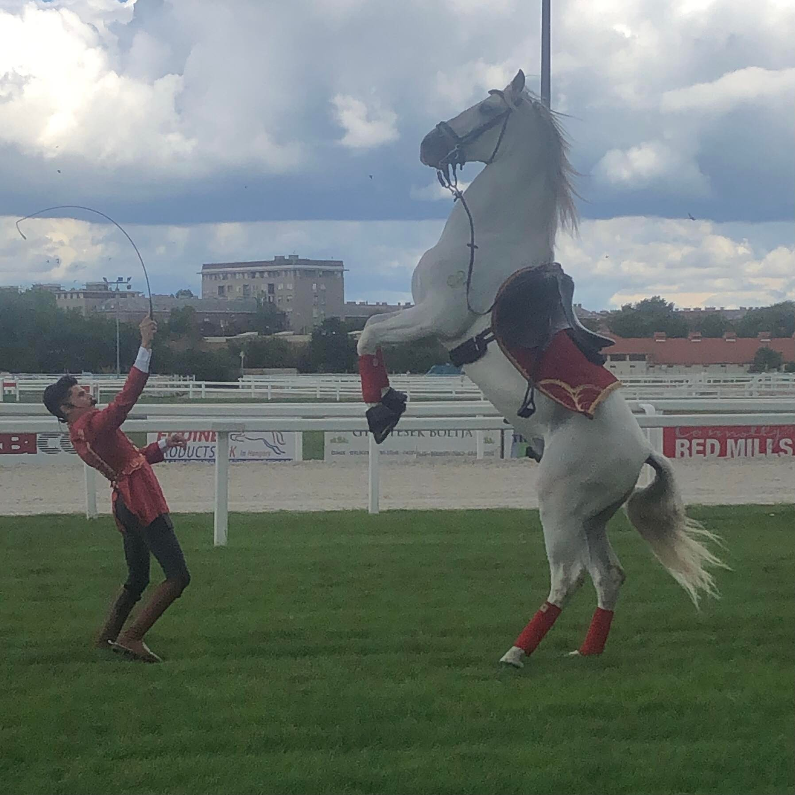

 A Kincsem Park a lóversenyzés különleges és egyedi helyszíne Budapest szívében, mely közel 100 hektáros zöld területtel és egészen sajátos mikroklímával rendelkezik. A történelmi múltú létesítmény régi és műemlék épületeinek jelentős részét az elmúlt években felújították, a versenypályák nemzetközi színvonalúak. A közelmúltban megépítették a galopp szintetikus versenypályát, mely tavasztól-őszig állandó minőségű futófelületet biztosít a telivérek számára. A gyeppályát a beépített automata öntözőrendszerrel folyamatosan locsolják a nyári időszakban, amit nagyban megkönnyít a 2019-ben kialakított tó, mely egyszerre esztétikus és hasznos. A fejlesztések folyamatosan zajlanak, a sportágtámogatásnak köszönhetően 2020-ban egy önálló és világszínvonalú profi agárpályát építettek a dinamikusan fejlődő harmadik sportág számára, emellett itt épült meg a Budapesti Rögbistadion is. A helyszín koncertek megrendezésére is alkalmas – Madonna itt adott első ízben koncertet Magyarországon (2009 augusztusában), a Sticky & Sweet Tour világ körüli turnéja keretében.
Folyamatosan nő a versenyek színvonala, amihez hozzátartozik, hogy a 2020-ban jelentősen nőtt a díjkeret. A szakmai fejlődést szolgálja azon törekvés is, hogy a galopp és az ügető szakágban Bajnokok Ligája szintű, „black type” versenyeket kívánnak rendezni. A Kincsem Díj és Marschall József Emlékverseny lesz az a futam, ahol Európa meghatározó lovait várják versenyezni a legjobb magyar lovak mellett. Legjobb lovaink és tehetséges versenyzőink külföldön is egyre több sikert aratnak. A Kincsem Parkban megrendezett versenyeken mindig fontos szempont az állatok egészségének fokozott védelme és a versenyek tisztasága. Minden versenyen állandó állatorvosi felügyeletet biztosítanak és külön antidopping csoport dolgozik a versenyhelyszínen. A levett dopping mintákat az akkreditált és független kölni doppinglaboratóriumban vizsgáltatják. Nyári melegben a lovak és agarak frissítése, a pálya hűtése garantált. A humán oldalon is orvosi felügyelet és mentőautó áll készenlétben.
2015 óta a világ harmadik legnagyobb fogadásszervezőjével, a francia PMU-vel állnak partneri viszonyban és működnek sikeresen együtt. 2016-tól a hazai versenyek mellett már a külföldi futamokra is lehet fogadni. Több futam, több százmilliós nyeremény alap, hatalmas nyeremények.
A Szerencsejáték Zrt.-vel is egyre szorosabb a kapcsolat, 2017-től már országos lefedettségű a fogadóhálózat. Minden lottózóban, 4500 helyen kapható a világ legnépszerűbb lovas szerencsejátéka, a Kincsem+ TUTI, amivel minden nap akár 300 millió forintot is nyerhetnek a szerencsés fogadók. Szuper Jackpot napokon pedig ez az összeg elérheti a 3 milliárd forintot is.
2017 szeptemberében elindult online fogadási oldaluk is, a bet.lovi.hu, így már bármikor, bárhonnan kényelmesen elérhetőek játékaik.
2017-ben közel 150.000 látogatót fogadott, különösen a négy nagy rendezvényük volt népszerű. A különleges környezet és atmoszféra igen kedvelt a fiatalok és a családok körében, a legkisebbektől az idősebb korosztályig mindenki megtalálja a számára megfelelő szórakozást. Az izgalmas versenyek mellett zene, tánc, gasztronómia, film, művészet és még sok egyéb program várja a látogatókat. Elsősorban törzsfogadóik számára létrehozták a Turf Szalont, mely a leglátogatottabb napjaikon minőségi kiszolgálást biztosít.
Rendezvényeik közül a Food Truck Show-k, a Derby és Kincsem Film Fesztivál, valamint az Ügetőszilveszter volt a legkiemelkedőbb. Utóbbi eseményen megdöntötték a nézettségi és fogadási rekordot. Közel 20.000 néző izgulta végig a versenynapot és 48,5 millió forint fogadás történt. Az utókommunikáció tekintetében is szenzációs eredményeket értek el, a legismertebb youtuberek, Pamkutyáék videójára már közel félmillióan voltak kíváncsiak.